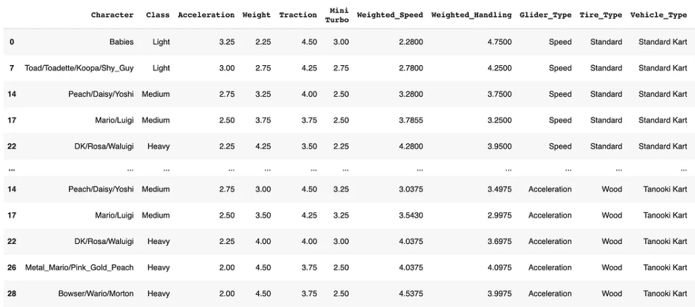

Date and Time: 04/12/2024 8-10pm
Location: Moo Moo Meadows
Attendees:
- Mario
- Luigi
- Peach
- Daisy
- Rosalina
- Tanooki Mario
- Cat Peach
- Birdo
- Yoshi
- Toad
- Koopa Troopa
- Shy Guy
- Lakitu
- Toadette
- King Boo
- Petey Piranha
- Wario
- Waluigi
- Donkey Kong
- Bowser
- Dry Bones
- Bowser Jr.
- Bowser Jr.
Unfinished Business From Last Meeting:
Whose better? mario or luigi?
A controversial topic. Some people like mario because he is the main charater. Though, some people like luigi because is just better than mario. Not sure - something that needs to be further discussed and perhaps we can list some pros and considered about the characters.
Do toads have hair? or are they bald but just wearing mushroom hats?
After doing some research, Toad is not wearing a mushroom hat and his head is indeed shaped like that. Though, some resources can be unreliable. More depth research and disucssion needs to be done perhaps...
Meeting Objective(s):
Finding out who is the best racer of all time in Mario Kart and the ideal kart.
Topics:
-
Characters Analysis and Performance Different characters have different weight classes (light, medium, heavy). Thus, they require specific kart setups to reach optimal performances . What are the strengths and weaknesses of the different characters? According to this link:
"All Mario Kart 8 characters are placed on a weight spectrum indicative of their size: Light, Medium, and Heavy. The heavier characters are favored due to their ability to maintain top speeds, but are slower to accelerate. Lighter characters accelerate more quickly, but have lower top speeds." -
Kart and Equipment Optimization The following image is a screenshot from: The Best Mario Kart 8 Characters . The analysis does not involve every single character but includes those from each weight class at least! Characters can be categorized as light, medium, or heavy. More information regarding the analysis can be read from the link. 
-
Track Strategies and Selection There are many maps in Mario Kart and a lot of strategy/shortcuts that should be taken into account. In addition, there are abilities and speedboost that should be considered as well. Not only optimal kart performance is necessary but strategy is also key to winnning a race.
Video:
Audio: